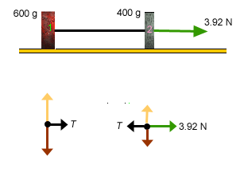
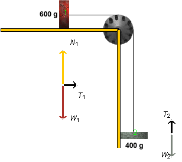

This lesson will give insight into the physics concepts of force, especially tension, free-body diagrams, and Newton's second law of motion. The system studied involves objects moving with constant accelerations, and the lesson will review concepts related to motion with constant acceleration.
The applet should be open. The step-by-step instructions in this lesson are to be carried out in the applet. You may need to toggle back and forth between instructions and applet if your screen space is limited. You should be prepared to do calculations to verify the numbers that are generated by the applet.
Before working through this section, you should have worked through the section "Acceleration Calculated from the Masses of the Blocks" in the Lesson available above. Here, the acceleration will be calculated once more, by a quicker method. However, this method must first be justified, and this justification involves a comparison with the method used in the section from the other Lesson.
As in the Lesson, let us assume the pulley in Fletcher's Trolley to be massless. Let us consider another system that looks somewhat different from Fletcher's Trolley, the system of two horizontally moving blocks shown in Figure 1 below. Figure 1 also shows he free-body diagrams for the two blocks in this new system.

Figure 1
The system consists of two blocks with the same masses as in Fletcher's Trolley, 600 g and 400 g. The blocks are connected by a massless, inextensible string and can slide without friction on a horizontal table. A force of magnitude 3.92 N is acting on block 2 to the right. This force has the same magnitude as the force of gravity that is acting on block 2 in the downward direction in Fletcher's Trolley.
Compare the free-body diagrams for the horizontally moving system to those for Fletcher's Trolley, which are shown in Figure 2 below. Draw both sets of free-body diagrams side by side in your Notebook, for practice and to have them there for later reference.

Figure 2
The horizontally moving system is dynamically equivalent to Fletcher's Trolley, because Newton's second law applied to the two horizontally moving blocks leads to the same equations that apply to Fletcher's trolley, namely, Eqs. (3) and (4) from the Lesson. They will be quoted as (L3) and (L4) here:
Block 1 (x-direction): T = 0.6a (L3)
Block 2 (y-direction): W2 - T = 0.4a. (L4)
Remember that the weight W2 of Block 2 is equal to 0.4g = 0.4×9.8 = 3.92 N. The magnitude of the horizontal force applied on Block 2 in the horizontally moving system must be chosen to be equal to W2.
To derive Eqs. (L3) and (L4) for the horizontally moving system, look at the free-body diagrams for this system and and those for Fletcher's Trolley in your Notebook. Pay particular attention to the forces on the two blocks that are directed along the lines of motion of the blocks.
As far as the forces along the lines of motion of the blocks are concerned, they look identical, except that the diagram for Block 2 in the horizontal system is turned by 900 relative to that in Fletcher's Trolley. The free-body diagram for Block 2 in the horizontally moving system also contains two vertical forces, indicated by yellow and maroon arrows, that are absent in the free-body diagram for Block 2 in Fletcher's Trolley. However, these forces are perpendicular to the line of motion of the blocks and have no effect on the acceleration and tension, the two quantities that we are interested in here.
If the same sets of forces are acting on the two pairs of blocks along the lines of motion of the blocks with the same values for the masses and applied forces, Newton's second law applied to both sets of blocks will yield the same Eqs. (L3) and (L4) for both systems. Obviously then, the same values for a and T will satisfy these equations for both systems.
Thus, the two systems are dynamically equivalent. All the pulley does is to change the direction of the string and the direction of motion of Block 2.
Is there an advantage in considering the horizontal system in place of Fletcher's Trolley? Yes, because it is easier to find the acceleration for the horizontal system. In the Lesson, which deals with Fletcher's Trolley, one has to solve the coupled equations (L3) and (L4). For the horizontal system, however, there is another, simpler way to find the acceleration. Here is what one can do.
3.92 N = (0.600 kg + 0.400 kg) a = 1.00 × a. (1)
a = 3.92 m/s2 . (2)
This is the same as value (L6) from the Lesson, obtained in the Lesson by solving equations (L3) and (L4).
Although the same is true for Fletcher's Trolley, it is of no use to determine the acceleration of the center of mass because the parts of the system do not move in unison: one block moves horizontally and the other one vertically. Thus, the motion of the center of mass is not the same as that of either block. Also, not all external forces acting on the system are known. Thus, we need to consider each block separately.
Suppose one has to find the accelerations and tensions in Fletcher's Trolley for several sets of masses. If one has worked things out for one set of mass values, using numbers from the start as in the section "Acceleration Calculated from the Masses of the Blocks" in the Lesson, one would have to do an analogous calculation all over again for the next pair of mass values, etc. However, if instead of working with explicit mass values one works with the symbols m1 and m2 and derives general expressions for a and T in terms of the symbols m1 and m2, one simply has to substitute any given mass values into the final expressions for a and T. In other words, one can find the answers by "plugging into formulas".
Let us derive such general expressions for a and T using only symbols. Again, let the pulley be massless. The derivation will apply equally to Fletcher's Trolley and the equivalent system of horizontally moving blocks.
We will do derivation first by applying Newton's second law to the two blocks separately, as was done in the Lesson. The two blocks can be those in Fletcher's trolley or those in the horizontally moving system. You should convince yourself that the equations written down below apply in either case. Subsequently we will derive the same results once more by following the simpler approach suggested above, i.e., by setting up an equation for the center of mass of the horizontally moving system directly.
Exercise 1. Applying Newton's second law to the two blocks in Fletcher's Trolley or in the horizontally moving system leads to Eqs. (L3) and (L4). These equations use explicit values for the masses of the two blocks. Generalize these equations so that the mass values are replaced by the symbols m1 and m2, and then obtain general expressions for a and T in terms of m1 and m2 by solving these equations.
Hint. For the weight W2 of Block 2, use Expression (L5).
Solution.
Newton 2 applied to Block 1, x-direction only, when the blocks are in motion:
T = m1a. (3)
Newton 2 applied to Block 2, y-direction only, when the blocks are in motion:
W2 - T = m2a. (4)
Equations (3) and (4) are the generalizations in terms of symbols of equations (L3) and (L4).
When we add the two left-hand sides and the two right-hand sides, the tension cancels and we get an equation that involves only the unknown a,
W2 = (m1 + m2)a (5)
whencea = W2/(m1 + m2) = [m2/(m1 + m2)] g (6)
where W2 = m2g has been used.
Eq.(6) gives us an expression for a into which we can substitute the given mass values. With m1 = 0.600 kg and m2 = 0.400 kg, this gives
a = [0.4/(0.6 + 0.4)] x 9.8 = 3.92 m s-2. (7)
This is again value (L6) for a, and it is also the value given by the applet.
To get the general expression for the tension T, we substite Expression (6) into Eq.(3). This gives
T = [m1m2/(m1 + m2)] g, when blocks are moving. (8)
Substituting the present mass values into Eq.(8), gives for the tension when the blocks are in motion
T = [0.6x0.4/(0.6 + 0.4)] x 9.8 = 2.352 N. (9)
This is the same as value (L7).
W2 = (m1 + m2)a. (5)
The horizontal external force applied to the horizontally moving Block 2 must be chosen to have magnitude W2, so that this force has the same magnitude as the external force acting along the line of motion of Block 2 in Fletcher's Trolley.
Eq.(5) can be solved for a as before. If one is interested also in the tension, one will have to consider individual blocks as in the other approach and set up either Eqs. (3) or (4). Given the value of a, the tension can then easily be found from either of these equations.
In Expression (8), the numerator of the fraction is the square of a mass and the denominator a mass. Thus, the ratio of the two is a mass. Multiplied by g, which has the units of acceleration, gives a force because mass times acceleration is a force. Thus, the right-hand side has the dimensions of force, which is as it should be because tension has the dimensions of force as well.
Question 1. Expression (8) gives the tension in the string when the blocks are moving. Obviously, the value of the tension depends on the masses of the blocks. What other conditions could be varied that might affect the tension?
E.g., does Expression (8) still apply when Block 1 is held fixed and the system is at rest? In other words, does the tension have the same value no matter whether the blocks are moving or are at rest? Or is the tension perhaps larger when the blocks are accelerating?
Answer. Look at the free-body diagrams in Figure 3 below showing the system when Block 1 is held fixed.

Figure 3
The free-body diagram for Block 2 shows the same two forces acting on the block now as when the block is moving: the upward force of magnitude T2 = T exerted by the string and the downward force of gravity of magnitude W2. However, this qualitative similarity does not mean that T has the same value in both cases.
Based on the free-body diagram for Block 2, Newton's second law implies equation of motion (4) for the block, already considered earlier:
W2 - T = m2a. (4)
When the blocks are in motion, a > 0 so that the right-hand side is positive. This implies that the tension is smaller than the weight when the blocks are moving. However, when the blocks are at rest, a = 0. With that, Eq.(4) implies that the tension is equal to the weight. Thus, the tension is less when the blocks are accelerating than when they are at rest with block 2 hanging freely.
Question 2. So far, we have always assumed the pulley's mass to be zero. Does the tension in the string change when the pulley's mass is changed? Find the answer "experimentally", using the applet.
Experiment 1. Reset the applet. Use the pulley-mass slider, the one illustrated on the right in Figure 4 below, to set the pulley's mass M to 1.00 kg. This will make the pulley's moment of inertia, I, equal to 0.125 kg m2. Check this in the Data box.

Figure 4
Observe the tension while the blocks are still at rest. The pulley will then be at rest as well so that its inertial properties will not matter. Thus, the tension is the same, whether the pulley has mass or not. It is still equal to 3.9 N.
Experiment 2. Click PLAY and then PAUSE the motion at some point. Note the values of T1 and T2 displayed by the applet. You should find T1 = 1.6 N and T2 = 2.9 N. Thus, the tensions are not equal on the two sides of the pulley, and neither value is equal to the 2.4 N observed when the pulley's mass is zero.
The reason why the tensions must be different on the two sides of the pulley is that the string must apply a net torque on the pulley to accelerate the pulley's clockwise rotation. When the pulley's inertia is not zero, this net torque must be unequal to zero as well.